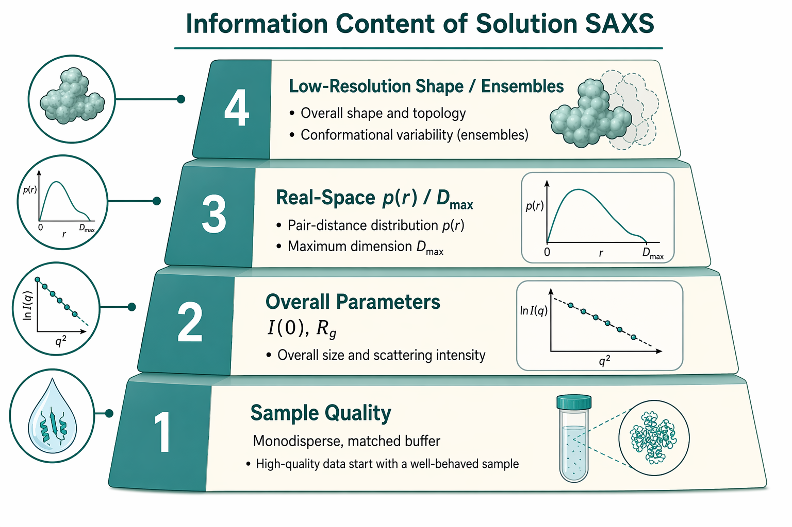
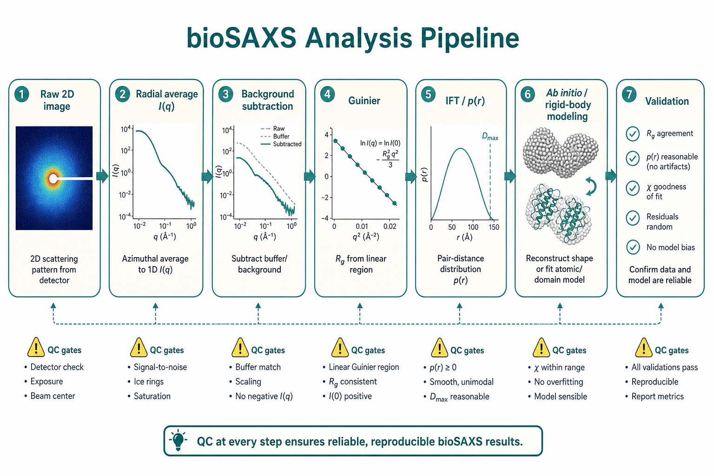

生物大分子溶液 SAS（BioSAS）
SAXS on biological macromolecules in solution
本导读以 Trewhella 等（2017）IUCrJ 发表指南为质量与报告锚点，串联 Blanchet & Svergun（2013）Annual Review、Mertens & Svergun（2010）蛋白质溶液表征工作流、Jeffries 等（2021）Nature Reviews Methods Primer、Koch/Vachette/Svergun（2003）与 Svergun & Koch（2003）生物溶液 SAS 经典综述，以及 Tuukkanen 等（2017）高亮度同步辐射进展与 Tria 等（2015）EOM 2.0 系综建模。焦点是溶液中蛋白质、核酸及其复合物：从一条 $I(q)$ 曲线能可靠得到什么、样品与数据质量如何把关、SEC-SAXS/时间分辨等现代实验如何改变样品策略，以及低分辨 3D 建模、柔性系综与整合结构生物学（IHM）发表时应报告什么。

问题是什么
结构生物学的主流高分辨方法是 X 射线晶体学与 NMR，但许多功能相关的蛋白处于柔性、多聚或瞬态复合状态，难以结晶。溶液 SAXS 用稀释水溶液中的小角散射探测回转半径、整体形状、寡聚态与复合物组装，样品量通常仅需毫克级，且可改变 pH、盐、配体或温度（Blanchet & Svergun 2013）。
与晶体学不同，溶液中分子随机取向，2D 图样环向平均后没有 Bragg 峰，只有连续的 $I(q)$；取向信息丢失，但距离分布信息保留在 $I(q)$ 中（Koch et al. 2003）。BioSAS 回答的是「整体尺寸、形状、寡聚态、复合物组装与构象系综」——而非原子坐标；与晶体学/NMR/EM 互补，在 IHM 中常作全局约束（Putnam et al. 2007；Brosey & Tainer 2019）。BioSAS 的核心挑战不是「能不能测到曲线」，而是：
- 信号极弱：生物分子与缓冲液的电子密度衬度很小，相干散射约为入射光子的 $10^{-6}$ 量级（Trewhella 2017）；
- 样品必须高度单分散、无聚集、处于稀溶液极限；
- 缓冲液背景扣除必须精准，否则 $I(0)$、分子量与 $p(r)$ 全错；
- 一条 1D 曲线对应无穷多 3D 形状，建模需规范与交叉验证（Trewhella 2017）；
- 柔性/无序体系（IDP、多结构域连接子）的 $I(q)$ 是构象系综的时间/系综平均，单一刚体模型可能系统性地误导（Tria et al. 2015）。
Jeffries 等（2021）将上述挑战归纳为方法学决策树：先判断样品是否单分散、缓冲是否匹配、$q$ 范围是否覆盖 Guinier 与足够高 $q$；再决定止步于整体参数、进入 $p(r)$/IFT，还是走向 ab initio、刚体拼合或系综拟合。跳过前两级直接建模，是 BioSAS 中最常见的假阳性来源。
核心文献主线
Blanchet & Svergun 2013：从参数到 3D 模型
该综述按分析深度递进，是 BioSAS 的「能力地图」：
- 实验与衬度：样品+溶剂与匹配溶剂分别测量，差分谱正比于浓度与 $(\rho_{\mathrm{particle}}-\rho_{\mathrm{solvent}})^2$；优化仪器背景是前提。
- 整体参数：Guinier 分析求 $R_g$ 与 $I(0)$；$I(0)/c$ 与分子量；$p(r)$ 与 $D_{\max}$；Kratky 图判断折叠/柔性。
- Ab initio 与刚体建模：DAMMIF、CORAL、SASREF 等从 $I(q)$ 或结合高分辨结构域拼复合物；寡聚态与化学平衡、时间分辨实验；须多轮运行 + 聚类评估歧义性（Franke & Svergun 2009）。
- 柔性体系：本征无序蛋白（IDP）与多结构域蛋白须系综（EOM 等）或扩展构象空间，而非单一刚体；Kratky/无量纲 Kratky 图是柔性的一阶证据（Durand et al.，见 Trewhella 2017）。
- 整合结构生物学：SAXS 与晶体学、NMR、EM、化学交联等联合约束全局组装（Putnam et al. 2007）。

Mertens & Svergun 2010：蛋白质表征工作流
强调现代同步辐射上秒级采集使 SAXS 成为样品筛选工具（与结晶条件优化、复合物组装测试、配体/缓冲添加剂扫描）。主线包括：浓度系列与无限稀释外推、IFT/GNOM 求 $p(r)$、CRYSOL 从原子坐标算理论曲线、寡聚分析与灵活体系（Bernadó 等）方法。文中给出「从样品制备到模型验证」的分步清单：每一步的通过标准（Guinier 线性、$R_g$ 浓度不变、$M$ 交叉验证）是进入下一步的前提。与晶体学/NMR「互补而非替代」的定位贯穿全文。
Jeffries 等 2021：SAXS/SANS 方法学 Primer
Nature Reviews Methods Primer 从源、探测器、样品环境到标定与还原给出全景图。对 BioSAS 尤其重要的是：（1）何时 SAXS 足够、何时需 SANS 衬度——单组分整体参数优先 SAXS；多组分拆解见 SANS 衬度专题；（2）浓度系列、缓冲匹配、辐射损伤与 SEC-SAS 的实验设计原则；（3）数据应存 SASBDB 等公共库以支持可重复评估。该文是「实验侧」与 ATSAS 类分析管线的对接文献。
Koch/Vachette/Svergun 2003 与 Svergun & Koch 2003
两篇互补的经典综述奠定 BioSAS 物理图像：稀溶液 $I(q)$ 与形式因子 $P(q)$、结构因子 $S(q)$ 的分解；Guinier、Porod、IFT 与 ab initio 的历史脉络；以及「溶液构象 ≠ 晶体构象」的反复警示。Koch 等偏 Rep. Prog. Phys. 教科书式推导，Svergun & Koch 则更偏生物应用综述——阅读任一篇即可建立 $q$ 窗口、衬度与模型歧义性的基础直觉。
Tuukkanen 等 2017：高亮度同步辐射与 SEC-SAXS
综述 bioSAXS 在第三代/第四代光源上的实验能力跃迁：机器人换样、在线 SEC-SAXS、微流控与时间分辨（$\mu$s–h）。要点：（1）SEC-SAXS 可分离聚集、寡聚混合物与复合物，但柱后稀释、Poiseuille 流致峰展宽、UV 与 SAXS 时间对齐影响浓度与 $M$ 估计（Trewhella 2017 亦有专节）；（2）在线自动 Guinier/$p(r)$/DAMMIF 管线适合高通量筛选，但不能替代人工 QC；（3）柔性/瞬态体系的时间分辨 SAXS 需单独报告采集策略与帧合并方式。
Trewhella 2017：发表与数据质量指南
2012 初步指南的更新，面向可重复评估与整合结构生物学（IHM）。四块报告要求（每块均有表格式 checklist，下文为要点摘要）：
- 样品（Table 1）：来源与纯化协议、纯度判定方法、序列/FASTA（含标签、辅因子、糖基化、配体）、缓冲液组成与 blank 获取方式（透析液/柱流出液）、浓度测定方法与消光系数；SEC-SAXS 须报告柱型、流速、进样体积与浓度；SANS 衬度实验须报告各组分氘化程度与溶剂 %D2O。
- 采集与还原（Table 2）：仪器类型与配置、束斑尺寸、$\Delta\lambda/\lambda$、$q$ 范围与 $q_{\min}$ 限制、探测器与误差估计、样品环境（温度、光程、流动池）；绝对标定方法与标准（水、玻璃碳 SRM 3600 或入射通量）；还原软件名称与版本。
- 展示与验证（Table 3）：绝对尺度 $\mathrm{cm}^{-1}$ 的 $I(q)$ 与误差棒；Guinier 拟合区间与 $s_{\max}R_g$；$p(r)$ 与 $D_{\max}$ 选取依据；$M$/体积多法互证（$I(0)$、Porod 体积、$V_c$ 等）；浓度系列或 SEC 帧选取说明。
- 建模（Table 4）：ab initio / 刚体 / 系综方法、软件版本、对称性假设依据、多轮运行次数、聚类与歧义性（AMBIMETER/SASRES 类指标）、约束来源与 $\chi^2$；模型须与数据一并存档。
强烈建议将数据与模型存入 SASBDB（Valentini et al. 2015；与 wwPDB SASvtf 衔接）。指南目的不是限制发表，而是让读者能独立评估数据精度与模型置信度——这对 IHM 中 SAS 权重的量化至关重要（Trewhella 2017）。
Tria 等 2015：EOM 2.0 与柔性系综
柔性体系的 $I(q)$ 是构象系综平均，$I(s)=\sum_k \nu_k I_k(s)$。EOM（Ensemble Optimization Method）流程：（1）生成大构象池；（2）计算各构象 $I(q)$；（3）遗传算法选出子系综使 $\chi^2$ 最小。EOM 2.0 增强：对称寡聚池生成、系综大小优化、$R_g$/$D_{\max}$ 分布的定量灵活性指标。解读要点：报告的是参数分布（如 $R_g$ 分布相对随机池的紧缩/扩展），而非单一「代表结构」；与 Kratky 平台、$p(r)$ 宽化、DAMMIF 多轮发散等柔性证据交叉验证。
Brosey & Tainer 2019 与 Putnam 等 2007（可选）
Brosey & Tainer（2019）从整合结构生物学视角概括 SAXS 演化：SEC-SAXS、时间分辨、系综与药物发现筛选；强调 SASBDB 与发表指南对领域标准化的推动。Putnam 等（2007）经典阐述 SAXS + 晶体学/NMR/计算 的混合建模逻辑——溶液 SAXS 验证晶体寡聚态、结构域取向与大规模运动，是 BioSAS 超越「画一个珠粒包络」的应用出口。
关键公式与结论
动量转移与强度
$$s = \frac{4\pi\sin\theta}{\lambda} \quad (\text{生物文献常记 } s \text{，与本站 } q \text{ 同义})$$
稀溶液、非相互作用、单分散时，背景校正后
$$I(s)=\langle |A(s)|^2\rangle_\Omega,$$
$A(s)$ 为过剩散射长度密度 $\Delta\rho(\mathbf{r})$ 的傅里叶变换，$\langle\cdot\rangle_\Omega$ 为全取向平均（Blanchet 2013）。
Guinier 区
$$I(s)=I(0)\exp\left(-\frac{R_g^2 s^2}{3}\right), \quad s R_g \lesssim 1.3.$$
$\ln I$ 对 $s^2$ 作图求斜率与截距。线性度是样品质量的一阶指标：聚集→低 $s$ 上翘；排斥→低 $s$ 下弯。生物 SAXS 常用 $s_1 < 1.3/R_g$ 扩展拟合区间（Mertens 2010）。浓度系列外推至无限稀释可分离相互作用项。
| Guinier 判据 | 严格（发表推荐） | 扩展（初筛可用） | 违反时的典型原因 |
|---|---|---|---|
| $s_{\max} R_g$ | $\leq 1.3$ | $\leq 1.5$ | $>1.5$ 时外推 $R_g$ 系统性偏低 |
| 线性度 | $\chi^2 \approx 1$，残差随机 | 目视无明显弯曲 | 低 $s$ 上翘 → 聚集；下弯 → $S(q)$ 或高浓度 |
| 数据点数 | $\geq 5$ 点在 Guinier 区内 | $\geq 3$ 点 | 点太少 → $R_g$ 不确定度 $>10\%$ |
| $R_g$ 与 $p(r)$ 一致性 | 两者差 $<5\%$ | 差 $<10\%$ | 差 $>15\%$ → $q$ 范围不足或 $D_{\max}$ 不当 |
数值直觉：$R_g = 25$ Å 的球状蛋白，Guinier 区满足 $s \lesssim 0.052$ Å$^{-1}$（$q \lesssim 0.052$ nm$^{-1}$）。若仪器 $s_{\min} = 0.06$ Å$^{-1}$，Guinier 区完全缺失——不能可靠估 $R_g$，须 SEC-SAXS 或更长相机距离。
分子量与 $I(0)$
绝对强度下（Trewhella 2017；Mertens & Svergun 2010）：
$$M=\frac{I(0)\,N_A}{C\,(\Delta\rho_M)^2},$$
$C$ 为质量浓度（g/ml），$\Delta\rho_M$ 为散射质量衬度（须含序列、标签、辅因子、水合与 SANS 同位素组成）。与化学组成预测的 $M$ 一致（$\pm 10\%$），是「测到的就是目标蛋白」的关键验证。核酸多阴离子体系的反离子云会额外贡献散射，$M$ 偏差须讨论（Trewhella 2017）。勿长期依赖单一标准蛋白比值法——不同蛋白 $\bar v$、水合差异可达约 10%。相对尺度可用 $V_c$（volume of correlation）或 SAXS MoW 等浓度无关估计作初筛，但发表与 IHM 仍推荐绝对标定。
Porod 体积与 Kratky 图
折叠球状蛋白：Porod 不变量给出 $V_p$，$V_p/M\approx 1.45$–$1.50\,\mathrm{nm}^3/\mathrm{kDa}$。无量纲 Kratky 图 $[(sR_g)^2 I/I(0)]$ vs $sR_g$：折叠蛋白呈钟形峰；无序链峰右移、上升翼更陡（Durand 等，见 Trewhella 2017）。
$p(r)$ 与 IFT
距离分布 $p(r)$ 由 间接傅里叶变换（GNOM 等）从 $I(q)$ 稳定反演；$p(r)=0$ 当 $r>D_{\max}$。$p(r)$ 得到的 $R_g$、$I(0)$ 应与 Guinier 自洽。$D_{\max}$ 是用户输入的正则化参数，须扫描多个取值检验稳定性——不可仅为凑 Guinier 而选 $D_{\max}$（Trewhella 2017）。柔性体系 $p(r)$ 尾部宽化、对 $D_{\max}$ 敏感——此时应优先考虑系综分析而非强行单 $p(r)$ 解释（Tria et al. 2015）。
SEC-SAXS 与在线分析
SEC-SAXS 将尺寸排阻色谱与 SAXS 联用，在峰顶附近截取帧分析，可绕过体相聚集与混合物（Tuukkanen et al. 2017；Trewhella 2017）。报告须含：UV 与 SAXS 时间对齐（偏移 $>2$ s 须校正）、柱后稀释导致的浓度低估、以及选取的积分窗口（过宽纳入拖尾、过窄损失统计）。在线自动分析（Guinier → GNOM → DAMMIF）适合筛选，但发表级数据仍须按发表指南完整记录 QC 与人工复核步骤。
结构因子与多聚
浓溶液或强相互作用时 $I(q)$ 含$S(q)$ 调制；结构研究应在稀溶液区使 $S(q)\approx 1$。寡聚平衡或混合物需浓度系列或 SEC-SAS 分离峰后再分析。
实践要点与坑
- 浓度系列（必做）： 至少 3–5 个浓度（覆盖 0.5–10 mg/ml 或更宽）；检查 $I(0)/c$ 与 $R_g$ 是否随 $c$ 恒定（变化 $<5\%$）。$I(0)/c$ 随 $c$ 下降 → 聚集或 $S(q)$ 干扰；$R_g$ 随 $c$ 增大 → 聚集或排斥。须外推 $c\to 0$ 或 SEC-SAXS 分离。
- 缓冲液匹配（必做）： blank 须与样品完全相同缓冲液（透析后取透析液）；pH、盐、添加剂、甘油/DMSO 浓度一致。背景错 1% 可毁掉高 $q$ 与 $V_p$。SANS 注意 ${}^1$H/${}^2$H 交换——样品在 D$_2$O 中孵育后 blank 也须 D$_2$O 且交换程度一致。
- Guinier 判据： $\ln I$ vs $s^2$ 线性，$s_{\max} \cdot R_g \leq 1.3$（严格）或 $\leq 1.5$（扩展）；拟合 $\chi^2 \approx 1$。上翘（低 $s$）→ 聚集或大颗粒污染；下弯 → 浓度效应或 $S(q)$。勿为「拉直」而截断低 $s$ 点而不报告。
- 辐射损伤： 同步辐射上对比 2–5 帧子曝光或 SEC 峰前后曲线；$I(0)$ 或 $R_g$ 随曝光漂移 $>3\%$ → 损伤。对策：流动池、自由基清除剂（如 5% 甘油、DTT）、降低通量、低温。损伤曲线 Guinier 区常上翘、$R_g$ 增大（Tuukkanen 2017）。
- 绝对标定： 发表级 BioSAS 推荐 $\mathrm{cm}^{-1}$ 绝对尺度（Trewhella 2017 Table 2）；水（Orthaber et al.）或 NIST SRM 3600 玻璃碳。相对尺度数据无法独立验证 $M$，不宜用于 IHM。
- 归档： SASBDB 提交须含四块指南信息：样品表、仪器表、验证图（Guinier/Kratky/$p(r)$）、建模日志（软件版本、$D_{\max}$、对称性、聚类）。
- 单分散验证： DLS $P_d < 15\%$、SEC 单峰、AUC $s_{20,w}$ 单一组分——至少两项互证。Guinier 线性 alone 不够（Trewhella 2017）。
- 分子量交叉验证： $M$ 来自 $I(0)/c$（绝对尺度）、$V_p$（Porod）、$p(r)$ 积分——三法应一致在 $\pm 10\%$。偏差 $>15\%$ 提示浓度、标定或样品不纯。
- $D_{\max}$ 稳定性： GNOM 中扫描 $D_{\max} \pm 10\%$，$p(r)$ 形状与 $R_g$ 应稳定；剧烈变化说明 $q$ 范围不足或数据质量差。
- 样品质量第一 → 如何判断： DLS、SEC、AUC 与 SAXS 互证单分散；Guinier 线性 alone 不够（Trewhella 2017）。SEC 多峰或 DLS 双峰 → 先纯化再测。
- 缓冲液匹配 → 如何判断： 样品减 blank 后高 $q$ 出现负强度或振荡 → blank 不匹配。透析液作 blank；SANS 注意 ${}^1$H/${}^2$H 交换导致 blank 不匹配。
- 绝对标定 → 如何判断： 发表与 $M$ 验证应用 $\mathrm{cm}^{-1}$；见 绝对标定 专题（水、SRM 3600）。$M$ 与序列预测差 $>20\%$ 时首先检查 $C$ 与 CF。
- 辐射损伤 → 如何判断： 同步辐射上多帧、流动或加自由基清除剂；对比不同曝光或 SEC 峰前后曲线。$I(0)$ 随时间单调下降、$R_g$ 增大是典型信号。
- 浓度系列 → 如何判断： 检查 $I(0)/c$ 与 $R_g$ 是否随浓度变；必要时外推 $c\to 0$。单一高浓度数据不能声称「无限稀释」参数。
- SEC-SAXS → 如何判断： 可分离聚集与复合物，但柱后稀释、峰展宽与 UV–SAXS 时间对齐影响浓度与 $M$（Trewhella 2017；Tuukkanen 2017）。UV 峰与 SAXS 峰时间偏移 $>2$ s 须校正；积分窗口应覆盖 SAXS 峰半高宽而非整条色谱。
- 低 $q$ 截断 → 如何判断： 为「拉直」Guinier 而扔掉低 $q$ 点必须报告并说明；最好显示被截断点（空符号）。截断后 $R_g$ 变化 $>5\%$ 说明原始数据有问题。
- 建模歧义 → 如何判断： 多轮 ab initio + 聚类；对称性假设需与无对称结果对照；柔性体系用系综（EOM 等）而非强行单刚体。$\chi^2$ 相近的多个模型 $\chi^2$ 差 $<3$ → 须报告歧义性。
- IDP 强行刚体 → 如何判断： Kratky 平台高、无量纲 Kratky 无峰、EOM 池分布远宽于选中系综，但 DAM 单模型被当作「结构」。改 EOM 2.0，报告 $R_g$/$D_{\max}$ 分布。
- IHM 权重不当 → 如何判断： SAS 数据精度未报告却与高分辨结构等权约束。按 提供误差棒、拟合区间与模型歧义性，供整合平台评估（Putnam 2007；Brosey 2019）。
相关词条
衬度、 散射长度密度、 前向散射、 Guinier 分析、 回转半径 $R_g$、 距离分布 $p(r)$、 间接傅里叶变换（IFT）、 形式因子、 结构因子、 Porod 定律
相关学习章
- 02 散射基础 — $q$、衬度、$P(q)$、$S(q)$
- 06 Guinier / Porod — $R_g$、$I(0)$、界面尾
- 07 实空间与 IFT — $p(r)$ 与 GNOM
- 05 绝对标定 — 生物 $M$ 验证所需的绝对尺度
- 09 应用岔路 — 生物溶液分支
- ATSAS 工具链
文献列表
- 2017 publication guidelines for structural modelling of small-angle scattering data from biomolecules in solution: an update. Jill Trewhella et al. (2017). DOI: 10.1107/S2059798317011597
- Small-Angle X-Ray Scattering on Biological Macromolecules and Nanocomposites in Solution. Clément E. Blanchet, Dmitri I. Svergun (2013). DOI: 10.1146/annurev-physchem-040412-110132
- Structural characterization of proteins and complexes using small-angle X-ray solution scattering. Haydyn D. T. Mertens, Dmitri I. Svergun (2010). DOI: 10.1016/j.jsb.2010.06.012
- Small-angle X-ray and neutron scattering. Cy M. Jeffries et al. (2021). DOI: 10.1038/s43586-021-00064-9
- Small-angle scattering: a view on the properties, structures and structural changes of biological macromolecules in solution. Michel H. J. Koch, Patrice Vachette, Dmitri I. Svergun (2003). DOI: 10.1017/S0033583503003871
- Small-angle scattering studies of biological macromolecules in solution. Dmitri I. Svergun, Michel H. J. Koch (2003). DOI: 10.1088/0034-4885/66/10/R05
- Progress in small-angle scattering from biological solutions at high-brilliance synchrotrons. Anne T. Tuukkanen, Alessandro Spilotros, Dmitri I. Svergun (2017). DOI: 10.1107/S205225251700786X
- Advanced ensemble modelling of flexible macromolecules using X-ray solution scattering. Giancarlo Tria, Haydyn D. T. Mertens, Michael Kachala, Dmitri I. Svergun (2015). DOI: 10.1107/S205225251500202X
- Evolving SAXS versatility: solution X-ray scattering for macromolecular architecture, functional landscapes, and integrative structural biology. Chris A. Brosey, John A. Tainer (2019). DOI: 10.1016/j.sbi.2019.04.004
- X-ray solution scattering (SAXS) combined with crystallography and computation: defining accurate macromolecular structures, conformations and assemblies in solution. Christopher D. Putnam, Michal Hammel, Greg L. Hura, John A. Tainer (2007). DOI: 10.1017/S0033583507004635